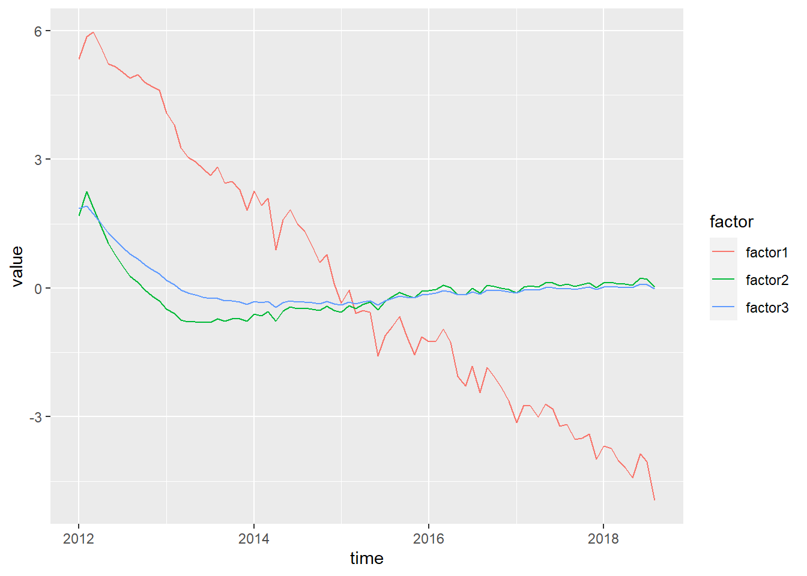

カルマンフィルタの実装
おはこんばんにちは。かなり久しぶりの投稿となってしまいました。決して研究をさぼっていたのではなく、BVARのコーディングに手こずっていました。あと少しで完成します。さて、今回はBVARやこの前のGiannnone et a (2008)のような分析でも大活躍のカルマンフィルタを実装してしまいたいと思います。このブログではパッケージソフトに頼らず、基本的に自分で一から実装を行い、研究することをポリシーとしていますので、これから頻繁に使用するであろうカルマンフィルタを関数として実装してしまうことは非常に有益であると考えます。今回はRで実装をしましたので、そのご報告をします。
1. カルマンフィルタとは？
まず、カルマンフィルタに関する簡単な説明を行います。非常にわかりやすい記事があるので、こちらを読んでいただいたほうがより分かりやすいかと思います。
カルマンフィルタとは、状態空間モデルを解くアルゴリズムの一種です。状態空間モデルとは、手元の観測可能な変数から観測できない変数を推定するモデルであり、以下のような形をしています。
$$
Y_{t} = Z_{t}\alpha_{t} + d_{t} + S_{t}\epsilon_{t} \
\alpha_{t} = T_{t}\alpha_{t-1} + c_{t} + R_{t}\eta_{t}
$$
$$ Y_{t} = 0.01\alpha_{t} + 5 + \epsilon_{t} $$ これが観測方程式になります。また、魚の全数は過去の値からそれほど急速には変化しないと考えられるため、以下のようなランダムウォークに従うと仮定します。
$$
\alpha_{t} = \alpha_{t-1} + 500 + \eta_{t}
$$
これが遷移方程式になります。あとは、これをカルマンフィルタアルゴリズムを用いて計算すれば、観測できない魚の全数を推定することができます。
このように状態空間モデルは非常に便利なモデルであり、また応用範囲も広いです。例えば、販売額から潜在顧客数を推定したり、クレジットスプレッドやトービンのQ等経済モデル上の概念として存在する変数を推定する、BVARのようにVARや回帰式の時変パラメータ推定などにも使用されます。
2. カルマンフィルタアルゴリズムの導出
さて、非常に便利な状態空間モデルの説明はこれくらいにして、カルマンフィルタの説明に移りたいと思います。カルマンフィルタは状態空間モデルを解くアルゴリズムの一種であると先述しました。つまり、他にも状態空間モデルを解くアルゴリズムは存在します。カルマンフィルタアルゴリズムは一般に誤差項の正規性の仮定を必要としないフィルタリングアルゴリズムであり、観測方程式と遷移方程式の線形性の仮定さえあれば、線形最小分散推定量となります。カルマンフィルタアルゴリズムの導出にはいくつかの方法がありますが、今回はこの線形最小分散推定量としての導出を行います。まず、以下の３つの仮定を置きます。
- 初期値$\alpha_{0}$は正規分布$N(a_{0},\Sigma_{0})$に従う確率ベクトルである($a_{t}$は$\alpha_{t}$の推定値)。
- 誤差項$\epsilon_{t}$,$\eta_{s}$は全ての$t$,$s$で互いに独立で、初期値ベクトル$\alpha_{0}$と無相関である（$E(\epsilon_{t}\eta_{s})=0$, $(E(\epsilon_{t}\alpha_{0})=0)$, $(E(\eta_{t}\alpha_{0})=0)$）。
- 2より、$E(\epsilon_{t}\alpha_{t}')=0$、$E(\eta_{t}\alpha_{t-1}')=0$。
まず、$t-1$期の情報集合$\Omega_{t-1}$が既知の状態での$\alpha_{t}$と$Y_{t}$の期待値（予測値）を求めてみましょう。上述した状態空間モデルと誤差項の期待値がどちらもゼロである事実を用いると、以下のように計算することができます。
$$ E(\alpha_{t}|\Omega_{t-1}) = a_{t|t-1} = T_{t}a_{t-1|t-1} + c_{t} E(Y_{t}|\Omega_{t-1}) = Y_{t|t-1} = Z_{t}a_{t|t-1} + d_{t} $$
ここで、次に、これらの分散を求めます。
$$
\begin{eqnarray}
E( (Y_{t}-Y_{t|t-1})(Y_{t}-Y_{t|t-1})'|\Omega_{t-1}) &=& E( (Z_{t}\alpha_{t} + d_{t} + S_{t}\epsilon_{t}-Y_{t|t-1})(Z_{t}\alpha_{t} + d_{t} + S_{t}\epsilon_{t}-Y_{t|t-1})'|\Omega_{t-1}) \
&=& E(Z_{t}\alpha_{t}\alpha_{t}‘Z_{t}’ + S_{t}\epsilon_{t}\epsilon_{t}‘S_{t}'|\Omega_{t-1}) \
&=& E(Z_{t}\alpha_{t}\alpha_{t}‘Z_{t}'|\Omega_{t-1}) + E(S_{t}\epsilon_{t}\epsilon_{t}‘S_{t}'|\Omega_{t-1}) \
&=& Z_{t}E(\alpha_{t}\alpha_{t}'|\Omega_{t-1})Z_{t}’ + S_{t}E(\epsilon_{t}\epsilon_{t}'|\Omega_{t-1})S_{t}’ \
&=& Z_{t}\Sigma_{t|t-1}Z_{t}’ + S_{t}H_{t}S_{t}' \
&=& F_{t|t-1}
\end{eqnarray}
$$
ここで、$t$期の情報集合$\Omega_{t}$が得られたとします（つまり、観測値$Y_{t}$を入手）。カルマンフィルタでは、$t$期の情報である観測値$Y_{t}$を用いて$a_{t|t-1}$を以下の方程式で更新します。
$$ E(\alpha_{t}|\Omega_{t}) = a_{t|t} = a_{t|t-1} + k_{t}(Y_{t} - Y_{t|t-1}) $$ つまり、観測値と$Y_{t}$の期待値（予測値）の差をあるウェイト$k_{t}$（$k×g$行列）でかけたもので補正をかけるわけです。よって、観測値と予測値が完全に一致していた場合は補正は行われないことになります。ここで重要なのは、ウエイト$k_{t}$をどのように決めるのかです。$k_{t}$は更新後の状態変数の分散$E( (\alpha_{t} - a_{t|t})(\alpha_{t} - a_{t|t})')= \Sigma_{t|t}$を最小化するよう決定します。これが、カルマンフィルタが線形最小分散推定量である根拠です。最小化にあたっては以下のベクトル微分が必要になりますので、おさらいをしておきましょう。今回使用するのは以下の事実です。
$$
\displaystyle \frac{\partial a’b}{\partial b} = \frac{\partial b’a}{\partial b} = a \
\displaystyle \frac{\partial b’Ab}{\partial b} = 2Ab
$$
ここで、$a,b$はベクトル（それぞれ$n×1$ベクトル、$1×n$ベクトル）、$A$は$n×n$の対称行列です。まず、１つ目から証明していきます。$\displaystyle y = a’b = b’a = \sum_{i=1}^{n}a_{i}b_{i}$とします。 このとき、$\frac{\partial y}{\partial b_{i}}=a_{i}$なので、
$$ \displaystyle \frac{\partial a’b}{\partial b} = \frac{\partial b’a}{\partial b} = a $$
次に２つ目です。$y = b’Ab = \sum_{i=1}^{n}\sum_{j=1}^{n}a_{ij}b_{i}b_{j}$とします。このとき、
$$ \displaystyle \frac{\partial y}{\partial b_{i}} = \sum_{j=1}^{n}a_{ij}b_{j} + \sum_{j=1}^{n}a_{ji}b_{j} = 2\sum_{j=1}^{n}a_{ij}b_{j} = 2a_{i}‘b $$ よって、
$$
\displaystyle \frac{\partial y}{\partial b} =
\left(
\begin{array}{cccc}
\frac{\partial y}{\partial b_{1}} \
\vdots \
\frac{\partial y}{\partial b_{n}} \
\end{array}
\right) = 2
\left(
\begin{array}{cccc}
\sum_{j=1}^{n}a_{1j}b_{j} \
\vdots \
\sum_{j=1}^{n}a_{nj}b_{j} \
\end{array}
\right) = 2
\left(
\begin{array}{cccc}
a_{1}‘b \
\vdots \
a_{n}‘b \
\end{array}
\right)
= 2Ab
$$
さて、準備ができたので、更新後の状態変数の分散$E( (\alpha_{t} - a_{t|t})(\alpha_{t} - a_{t|t})')$を求めてみましょう。
１回目の式変形で、$a_{t|t}$に上述した更新式を代入し、２回目の式変形で観測方程式と上で計算した$E(Y_{t}|\Omega_{t-1})$を代入しています。さて、更新後の状態変数の分散$\Sigma_{t|t}$を$k_{t}$の関数として書き表すことができたので、これを$k_{t}$で微分し、0と置き、$\Sigma_{t|t}$を最小化する$k_{t}$を求めます。先述した公式で、$a=\Sigma_{t|t-1}Z_{t}'$、$b=k_{t}'$、$A=(Z_{t}\Sigma_{t|t-1}Z_{t}’ + S_{t}H_{t}S_{t}')$とすると（$A$は分散共分散行列の和なので対称行列）、
$$ \frac{\partial \Sigma_{t|t}}{\partial k_{t}'} = -2(Z_{t}\Sigma_{t|t-1})’ + 2(Z_{t}\Sigma_{t|t-1}Z_{t}’ + S_{t}H_{t}S_{t}')k_{t} = 0 $$
ここから、$k_{t}$を解きなおすと、
突然、$F_{t|t-1}$が出てきました。これは観測変数の予測値の分散$E((Y_{t}-Y_{t|t-1})(Y_{t}-Y_{t|t-1})'|\Omega_{t-1})$でした。一方、$\Sigma_{t|t-1}Z_{t}$は状態変数の予測値の分散を観測変数のスケールに調整したものです（観測空間に写像したもの）。つまり、カルマンゲイン$k_{t}$は状態変数と観測変数の予測値の分散比となっているのです。観測変数にはノイズがあり、観測方程式はいつも誤差０で満たされるわけではありません。また、状態方程式にも誤差項が存在します。状態の遷移も100%モデル通りにはいかないということです。$t$期の観測変数$Y_{t}$が得られたとして、それをどれほど信頼して状態変数を更新するかは観測変数のノイズが状態変数のノイズに比べてどれほど小さいかによります。つまり、相対的に観測方程式が遷移方程式よりも信頼できる場合には状態変数を大きく更新するのです。このように、カルマンフィルタでは、観測方程式と遷移方程式の相対的な信頼度によって、更新の度合いを毎期調整しています。その度合いが分散比であり、カルマンゲインだというわけです。ちなみに欠損値が発生した場合には、観測変数の分散を無限大にし、状態変数の更新を全く行わないという対処を行います。観測変数に信頼がないので当たり前の処置です。この場合は遷移方程式を100%信頼します。これがカルマンフィルタのコアの考え方になります。 更新後の分散を計算しておきます。
では、最終的に導出されたアルゴリズムをまとめたいと思います。
3. Rで実装する。
以下がRでの実装コードです。
kalmanfiter <- function(y,I,t,z,c=0,R=NA,Q=NA,d=0,S=NA,h=NA,a_int=NA,sig_int=NA){
#-------------------------------------------------------------------
# Implemention of Kalman filter
# y - observed variable
# I - the number of unobserved variable
# t - parameter of endogenous variable in state equation
# z - parameter of endogenous variable in observable equation
# c - constant in state equaion
# R - parameter of exogenous variable in state equation
# Q - var-cov matrix of exogenous variable in state equation
# d - constant in observable equaion
# S - parameter of exogenous variable in observable equation
# h - var-cov matrix of exogenous variable in observable equation
# a_int - initial value of endogenous variable
# sig_int - initial value of variance of endogenous variable
#-------------------------------------------------------------------
library(MASS)
# 1.Define Variable
if (class(y)!="matrix"){
y <- as.matrix(y)
}
N <- NROW(y) # sample size
L <- NCOL(y) # the number of observable variable
a_pre <- array(0,dim = c(I,1,N)) # prediction of unobserved variable
a_fil <- array(0,dim = c(I,1,N+1)) # filtered of unobserved variable
sig_pre <- array(0,dim = c(I,I,N)) # prediction of var-cov mat. of unobserved variable
sig_fil <- array(0,dim = c(I,I,N+1)) # filtered of var-cov mat. of unobserved variable
y_pre <- array(0,dim = c(L,1,N)) # prediction of observed variable
F_pre <- array(0,dim = c(L,L,N)) # prediction of var-cov mat. of observable variable
F_inv <- array(0,dim = c(L,L,N)) # inverse of F_pre
k <- array(0,dim = c(I,L,N)) # kalman gain
if (any(is.na(a_int))==TRUE){
a_int <- matrix(0,nrow = I,ncol = 1)
}
if (any(is.na(sig_int))==TRUE){
sig_int <- diag(1,nrow = I,ncol = I)
}
if (any(is.na(R))==TRUE){
R <- diag(1,nrow = I,ncol = I)
}
if (any(is.na(Q))==TRUE){
Q <- diag(1,nrow = I,ncol = I)
}
if (any(is.na(S))==TRUE){
S <- matrix(1,nrow = L,ncol = L)
}
if (any(is.na(h))==TRUE){
H <- array(0,dim = c(L,L,N))
for(i in 1:N){
diag(H[,,i]) = 1
}
}else if (class(h)!="array"){
H <- array(h,dim = c(NROW(h),NCOL(h),N))
}
# fill infinite if observed data is NA
for(i in 1:N){
miss <- is.na(y[i,])
diag(H[,,i])[miss] <- 1e+32
}
y[is.na(y)] <- 0
# 2.Set Initial Value
a_fil[,,1] <- a_int
sig_fil[,,1] <- sig_int
# 3.Implement Kalman filter
for (i in 1:N){
if(class(z)=="array"){
Z <- z[,,i]
}else{
Z <- z
}
a_pre[,,i] <- t%*%a_fil[,,i] + c
sig_pre[,,i] <- t%*%sig_fil[,,i]%*%t(t) + R%*%Q%*%t(R)
y_pre[,,i] <- Z%*%a_pre[,,i] + d
F_pre[,,i] <- Z%*%sig_pre[,,i]%*%t(Z) + S%*%H[,,i]%*%t(S)
k[,,i] <- sig_pre[,,i]%*%t(Z)%*%ginv(F_pre[,,i])
a_fil[,,i+1] <- a_pre[,,i] + k[,,i]%*%(y[i,]-y_pre[,,i])
sig_fil[,,i+1] <- sig_pre[,,i] - k[,,i]%*%F_pre[,,i]%*%t(k[,,i])
}
# 4.Aggregate results
result <- list(a_pre,a_fil,sig_pre,sig_fil,y_pre,k,t,z)
names(result) <- c("state prediction", "state filtered", "state var prediction",
"state var filtered", "observable prediction", "kalman gain",
"parameter of state eq", "parameter of observable eq")
return(result)
}
案外簡単に書けるもんですね。これを使って、Giannone et al (2008)をやり直してみます。データセットは前回記事と変わりません。
以下、分析用のRコードです。
#------------------------
# Giannone et. al. 2008
#------------------------
library(MASS)
library(xts)
# ファクターを計算
f <- 3
z <- scale(dataset1)
for (i in 1:nrow(z)){
eval(parse(text = paste("S_i <- z[i,]%*%t(z[i,])",sep = "")))
if (i==1){
S <- S_i
}else{
S <- S + S_i
}
}
S <- (1/nrow(z))*S
gamma <- eigen(S)
D <- diag(gamma$values[1:f])
V <- gamma$vectors[,1:f]
F_t <- matrix(0,nrow(z),f)
for (i in 1:nrow(z)){
eval(parse(text = paste("F_t[",i,",]<- z[",i,",]%*%V",sep = "")))
}
lambda_hat <- V
psi <- diag(diag(S-V%*%D%*%t(V)))
R <- diag(diag(cov(z-z%*%V%*%t(V))))
a <- matrix(0,f,f)
b <- matrix(0,f,f)
for(t in 2:nrow(z)){
a <- a + F_t[t,]%*%t(F_t[t-1,])
b <- b + F_t[t-1,]%*%t(F_t[t-1,])
}
b_inv <- solve(b)
A_hat <- a%*%b_inv
e <- numeric(f)
for (t in 2:nrow(F_t)){
e <- e + F_t[t,]-F_t[t-1,]%*%A_hat
}
H <- t(e)%*%e
Q <- diag(1,f,f)
Q[1:f,1:f] <- H
p <- ginv(diag(nrow(kronecker(A_hat,A_hat)))-kronecker(A_hat,A_hat))
result1 <- kalmanfiter(z,f,A_hat,lambda_hat,c=0,R=NA,Q=Q,d=0,S=NA,h=R,a_int=F_t[1,],sig_int=matrix(p,f,f))
プロットしてみます。
library(ggplot2)
library(tidyverse)
ggplot(gather(data.frame(factor1=result1$`state filtered`[1,1,-dim(result1$`state filtered`)[3]],factor2=result1$`state filtered`[2,1,-dim(result1$`state filtered`)[3]],factor3=result1$`state filtered`[3,1,-dim(result1$`state filtered`)[3]],time=as.Date(rownames(dataset1))),key = factor,value = value,-time),aes(x=time,y=value,colour=factor)) + geom_line()

giannoneの記事を書いた際は、元論文のMATLABコードを参考にRで書いたのですが、通常のカルマンフィルタとは観測変数の分散共分散行列の逆数の計算方法が違うらしくグラフの形が異なっています。まあでも、概形はほとんど同じですが（なので、ちゃんと動いているはず）。
4. カルマンスムージング
カルマンフィルタの実装は以上で終了なのですが、誤差項の正規性を仮定すれば$T$期までの情報集合$\Omega_{T}$を用いて、$a_{i|i}, \Sigma_{i|i}(i = 1:T)$を$a_{i|T}, \Sigma_{i|T}(i = 1:T)$へ更新することができます。これをカルマンスムージングと呼びます。これを導出してみましょう。その準備として、以下のような$\alpha_{t|t}$と$\alpha_{t+1|t}$の混合分布を計算しておきます。
ここで、$Cov(\alpha_{t|t},\alpha_{t+1|t})$は
ここで、条件付き多変量正規分布は以下のような分布をしていることを思い出しましょう（ 参考 ）。
$$
(X_{1},X_{2}) = N(
\left(
\begin{array}{cccc}
\mu_{1} \
\mu_{2}
\end{array}
\right),
\left(
\begin{array}{cccc}
\Sigma_{11}, \Sigma_{12} \
\Sigma_{21}, \Sigma_{22}
\end{array}
\right)
) \
$$
$$
(X_{1}|X_{2}=x_{2}) = N(\mu_{1} + \Sigma_{12}\Sigma_{22}^{-1}(x_{2}-\mu_{2}),\Sigma_{11}-\Sigma_{12}\Sigma_{22}^{-1}\Sigma_{21})
$$
これを用いて、$(\alpha_{t|t}|\alpha_{t+1|t}=a_{t+1})$を計算してみましょう。
ただし、$a_{t+1}$の値は観測不可能なので、上式を用いて状態変数を更新することはできません。今、わかるのは$T$期における$a_{t+1|T}$の分布のみです。ということで、$a_{t+1}$を$a_{t+1|T}$で代用し、$\alpha_{t|T}$の分布を求めてみます。では、計算していきます。$\alpha_{t|T} = N(E(\alpha_{t|T}),Var(\alpha_{t|T}))$ですが、
というように、$\alpha_{t+1|T}$も確率変数となるので、繰り返し期待値の法則と繰り返し分散の法則を使用します（こちらを参照）。
-
繰り返し期待値の法則
$E(x) = E_{Z}(E(X|Y=Z))$ -
繰り返し分散の法則
$Var(X) = E_{Z}(Var(X|Y=Z))+Var_{Z}(E(X|Y=Z))$
よって、
となります。カルマンスムージングのアルゴリズムをまとめておきます。
カルマンスムージングの特徴的な点は後ろ向きに計算をしていく点です。つまり、$T$期から1期に向けて計算を行っていきます。$L_{t}$に関してはそもそもカルマンフィルタを回した時点で計算可能ですが、$\alpha_{t|T}$は$T$期までのデータが手元にないと計算できません。今、$T$期まで観測可能なデータが入手できたとしましょう。すると、２番目の方程式を用いて、$a_{T-1|T}$を計算します。ちなみに$a_{T|T}$はカルマンフィルタを回した時点ですでに手に入っているので、計算する必要はありません。同時に、３番目の式を用いて$\Sigma_{T-1|T}$を計算します。そして、$a_{T-1|T},\Sigma_{T-1|T}$と$L_{T-1}$を用いて$a_{T-2|T},\Sigma_{T-2|T}$を計算、というように1期に向けて後ろ向きに計算をしていくのです。さきほど、遷移方程式の誤差項$\eta_{t}$と定数項$c_{t}$がなく、遷移方程式のパラメータが単位行列のカルマンフィルタは逐次最小自乗法と一致すると書きましたが、カルマンスムージングの場合は$T$期までのサンプルでOLSを行った結果と一致します。
Rで実装してみます。
kalmansmoothing <- function(filter){
#-------------------------------------------------------------------
# Implemention of Kalman smoothing
# t - parameter of endogenous variable in state equation
# z - parameter of endogenous variable in observable equation
# a_pre - prediction of state
# a_fil - filtered value of state
# sig_pre - prediction of var of state
# sig_fil - filtered value of state
#-------------------------------------------------------------------
library(MASS)
# 1.Define variable
a_pre <- filter$`state prediction`
a_fil <- filter$`state filtered`
sig_pre <- filter$`state var prediction`
sig_fil <- filter$`state var filtered`
t <- filter$`parameter of state eq`
C <- array(0,dim = dim(sig_pre))
a_sm <- array(0,dim = dim(a_pre))
sig_sm <- array(0,dim = dim(sig_pre))
N <- dim(C)[3]
a_sm[,,N] <- a_fil[,,N]
sig_sm[,,N] <- sig_fil[,,N]
for (i in N:2){
C[,,i-1] <- sig_fil[,,i-1]%*%t(t)%*%ginv(sig_pre[,,i])
a_sm[,,i-1] <- a_fil[,,i-1] + C[,,i-1]%*%(a_sm[,,i]-a_pre[,,i])
sig_sm[,,i-1] <- sig_fil[,,i-1] + C[,,i-1]%*%(sig_sm[,,i]-sig_pre[,,i])%*%t(C[,,i-1])
}
result <- list(a_sm,sig_sm,C)
names(result) <- c("state smoothed", "state var smoothed", "c")
return(result)
}
先ほどのコードの続きでRコードを書いてみます。
result2 <- kalmansmoothing(result1)
かなりシンプルですね。ちなみにグラフにしましたが、１個目とほぼ変わりませんでした。とりあえず、今日はここまで。